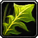

Poison tree
[ Arbre à poison ]
injury (vegetal) - 200 gp
The poison tree is a rare plant that grows only in the heart of tropical jungles. To protect itself from insects, this tree produces a powerful orange poison; the slightest scratch causes excruciating pain in the wound. Its flowers are the only known natural antidote.
A creature subjected to this poison must make a DC 10 Constitution saving throw, taking 7 (2d6) damage on a failed save.
A creature subjected to this poison must make a DC 10 Constitution saving throw, taking 7 (2d6) damage on a failed save.
Recueil des poisons d´Tapouweb